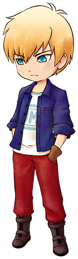

格雷

塞巴拉的孙子。在铁匠铺修行中，不过老是被塞巴拉说教，使得自己开始犹豫是否还要继续修行。
简略说明
- 登场：最初
- 住所：赛巴拉铁匠铺
- 性别：男
- 生日：冬6日（冬23日）
- 家庭成员：祖父（塞巴拉）
喜欢与讨厌的物品
- 最喜欢：烤玉米
- 很喜欢：超强体力药、超强消除疲劳药、巧克力、炒饭、铜、银、金、秘银
- 喜欢：番茄、鸡蛋、咖喱乌冬面
- 普通：黄瓜、葡萄果汁、曲奇
- 讨厌：芜菁、温泉蛋、竹笋饭、红豆
- 很讨厌：毒蘑菇、杂草、石头、空罐、长靴
行程
| 状况 |
AM |
PM |
AM |
| 6 |
7 |
8 |
9 |
10 |
11 |
12 |
1 |
2 |
3 |
4 |
5 |
6 |
7 |
8 |
9 |
10 |
11 |
12 |
| 单身 |
一~日 |
旅馆2楼 |
广场 |
铁匠铺 |
旅馆2楼 |
| 单身① |
一 |
旅馆2楼 |
铁匠铺 |
旅馆2楼 |
| 二、三、五、六、日 |
旅馆2楼 |
铁匠铺 |
图书馆1楼 |
旅馆2楼 |
| 四 |
旅馆2楼 |
山顶 |
铁匠铺 |
图书馆1楼 |
旅馆2楼 |
| 婚后 |
一~日 |
自家 |
广场 |
铁匠铺 |
自家 |
①：情敌事件「玛丽&格雷」一阶段 发生后
多使用铁匠铺吧
毕竟是铁匠铺的见习工，格雷是很喜欢矿石的。
能在「泉之采矿场」挖掘到的「铜」和「银」，在「湖之采矿场」挖掘到的「绿松石」和「海蓝宝石」，都很容易获得，比较适合拿来送礼。
要注意的是，「废矿石」可是他不喜欢的东西。
如果想和他的关系更进一步，多多使用铁匠铺吧。
使用一定次数的道具的改造以及加工等服务的话，和格雷的好感度也会上升。
在「泉之采矿场」获得「山铜」的话，推荐做成项链之类的首饰再送给格雷。
满足一定条件后好感度上升
| 铁匠铺的订单次数 |
格雷的好感度 |
| 15次以上 |
+2500 |
| 25次以上 |
+2500 |
| 35次以上 |
+2500 |
| 45次以上 |
+2500 |
| 55次以上 |
+2500 |
居民事件
恋爱事件
 相遇好感度0以上
相遇好感度0以上
- 星期：二、五、六、日
- 天气：-
- 时间：AM10:00～PM1:00
- 地点：铁匠铺
- 其他条件：格雷和塞巴拉在铁匠铺里
- 结果：
修习就是这么回事。 → +3000
既然如此，就放弃吧？ → -2000
朋友1好感度5000以上
- 星期：二、四、六、日
- 天气：-
- 时间：PM5:00～PM10:00
- 地点：旅馆2楼
- 其他条件：格雷在旅馆2楼
- 结果：
真了不起啊 → +3000
理所应当的 → -2000
 朋友2好感度10000以上
朋友2好感度10000以上
- 星期：一
- 天气：晴
- 时间：AM6:00～PM12:00
- 地点：主人公的牧场
- 其他条件：
拥有大背包或整理架
背包里有空位
- 结果：
有啊！ → +3000
完全没兴趣 → -2000
 朋友3好感度20000以上
朋友3好感度20000以上
- 星期：一
- 天气：-
- 时间：AM10:00～PM1:00
- 地点：铁匠铺
- 其他条件：格雷和塞巴拉在铁匠铺里
- 结果：
当然！ → +3000
不知道… → -2000
 告白好感度30000以上
告白好感度30000以上 恋人/知己1好感度40000以上
恋人/知己1好感度40000以上
- 星期：一
- 天气：-
- 时间：AM10:00～PM1:00
- 地点：铁匠铺
- 其他条件：道具栏里有镰刀
- 结果：
真帅啊 → +3000
明明不需要在意的 → -2000
 恋人/知己2好感度50000以上
恋人/知己2好感度50000以上
- 星期：-
- 天气：晴
- 时间：AM10:00～PM1:00
- 地点：主人公的牧场
- 其他条件：-
- 结果：
你已经驾重就轻了 → +3000
还不够成熟的说 → -2000
 求婚好感度60000以上
求婚好感度60000以上结婚·知己之仪
- 求婚成功的一周后。
- 结果：
参加仪式的居民亲密度+20
塞巴拉亲密度达到最大值
称呼
- 和对象结婚以后。
- 结果：对方会以自己选择的称呼来叫自己